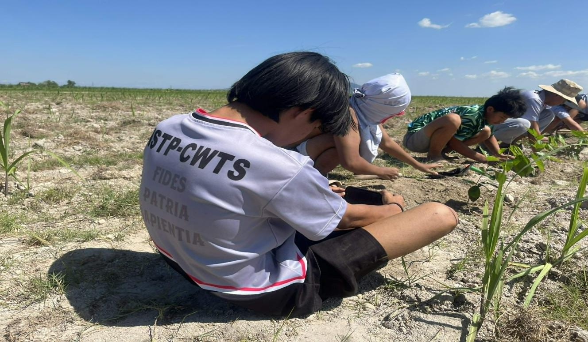
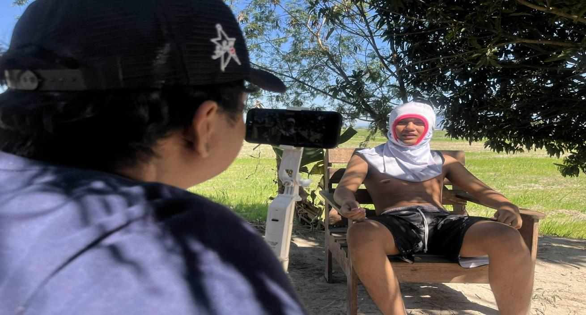
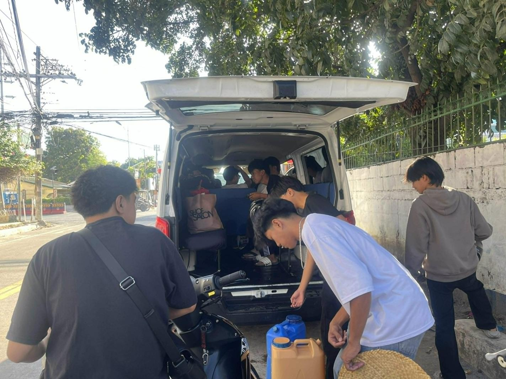
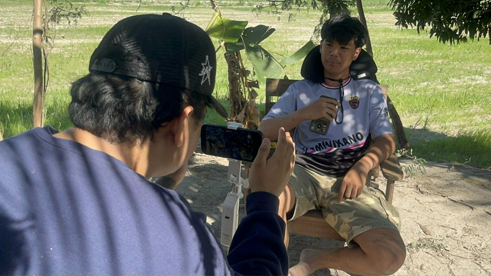
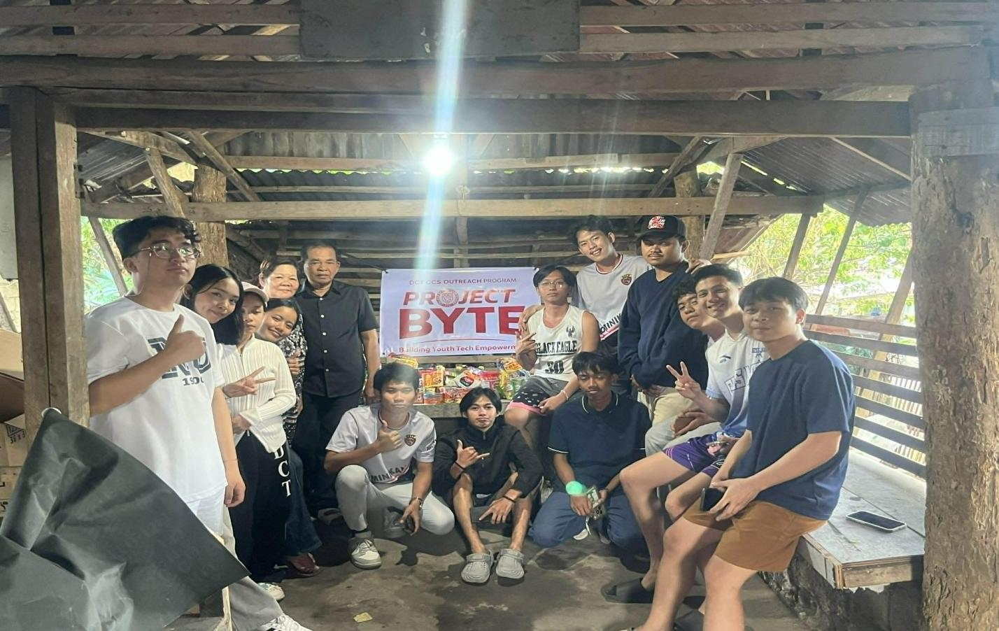
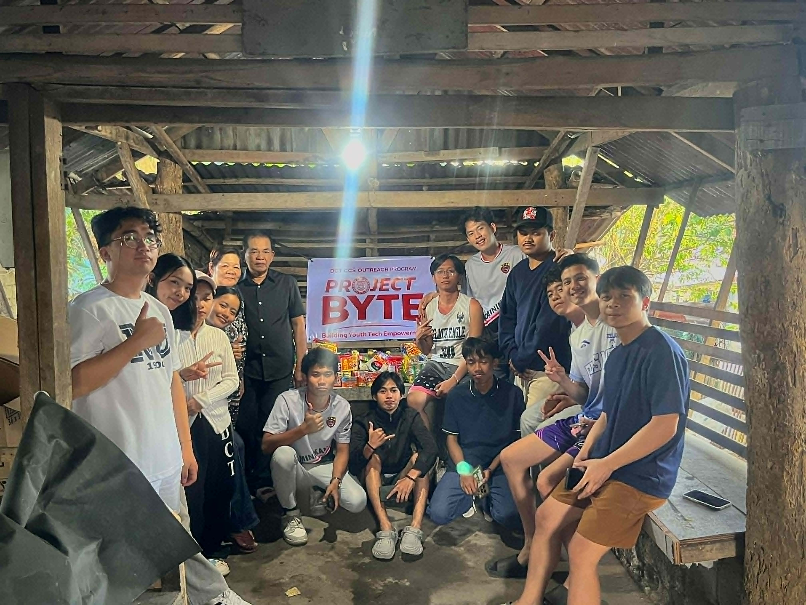
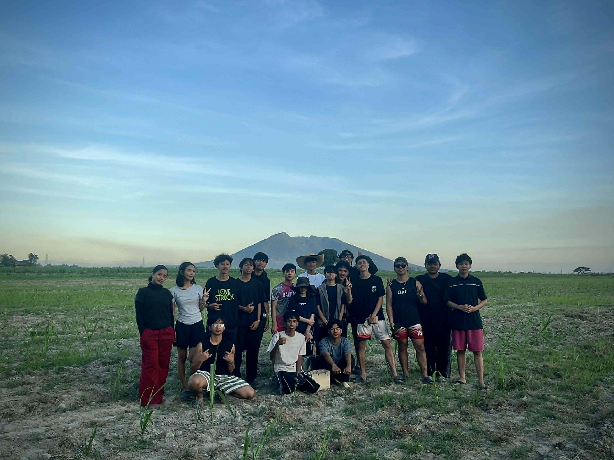
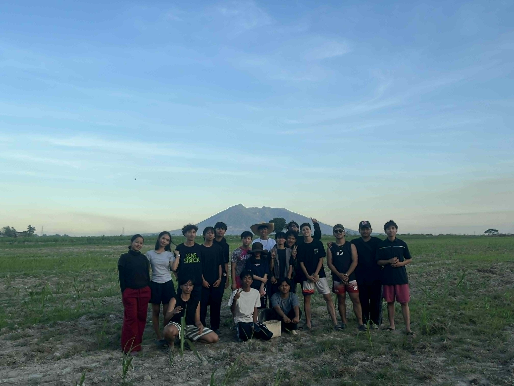

Paa sa Lupa, Mata sa Langit
A Documentary film about a farmer who sacrificed everything so he can have a stable life.
Learn MoreLEARN MORE ABOUT THE DOCUMENTARY BY EXPLORING THE CONTENT BELOW
Discover the concept behind the documentary made by the BSIT ‐ 1A

CONCEPT
A Farmer, an Individual who's respectable through his hard work, Farming has long been a part of the people's culture. The students chose the farmer through their journey in documentary film by providing necessities such as groceries, donations, and other utilities that are needed in the work of a farming. With this, the students will also immerse his way of life in farming in particular of planting, preparing and maintaining the land, taking care of animals, or harvesting crops and selling it to the market.
BRIEF DESCRIPTION
It is about helping a farmer in need by spending time with them and joining in their daily work. It aims to understand the struggles and challenges they go through every day, while also recognizing the effort and dedication it takes to manage a farm. Through this experience, we hope to gain a better appreciation for farmers and the important role they play in providing for the community.
BEHIND THE SCENES






AFTER FILMING


WATCH THE DOCUMENTARY
LEARN BY WATCHING THE FULL DOCUMENTARY
Learn the life of a farmer and the challenges they face
FIND MORE ABOUT US BY VISITING OUR OWN MADE WEBSITE
Click on the images below to explore our portfolio and learn more about our work.